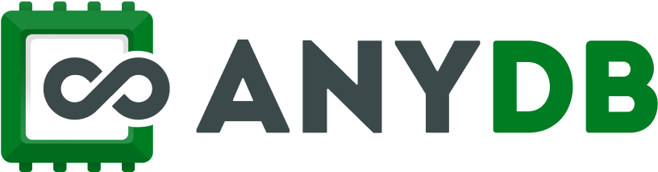

Buying AnyDB gives you the platform. Deciding how your operation should be modelled inside it is the hard part — that's ours.

Implementation, integration and support for AnyDB.Four ideas, and you've got the whole platform.
Orders, items, vendors, sites, claims.
Each one holds its own information, and can contain others.
Link the ones that stand on their own. Data flows along the link.
Orders, items, vendors, sites.
Each holds its own information.
Data flows along the link.
Views, automation, dashboards.
AnyDB is built by Humanly Inc (Austin, Texas) — the founding team behind FileCloud. Cloud or on-premise, with APIs to the systems you already run.
Here's the line where most businesses start losing time.
Indicative, not a quote.
Bring the spreadsheet.
Objects, links and the rules you actually follow.
Handoffs to accounting, CRM or payments.
Same people on support afterwards.
Bring the spreadsheet.
Objects, links and the rules you follow.
Handoffs to accounting, CRM or payments.
Same people on support afterwards.
No. AnyDB is the platform vendor; VKT does discovery, solution design, implementation, integration and support. You can buy AnyDB without us, and we'll say when your existing systems can do the job instead.
An ERP brings a predefined model and you fit yourself to it. AnyDB lets you model your operation as it actually works — which is why the modelling decisions matter more than the licence.
Usually not. AnyDB connects to what you already run. We'd rather keep a working accounting platform and fix the process happening around it.
That's how we prefer to work. One real workflow into real use, then expand only when it earns it.
We do, for the system we built — the same people, not a ticket queue. AnyDB supports the platform itself.